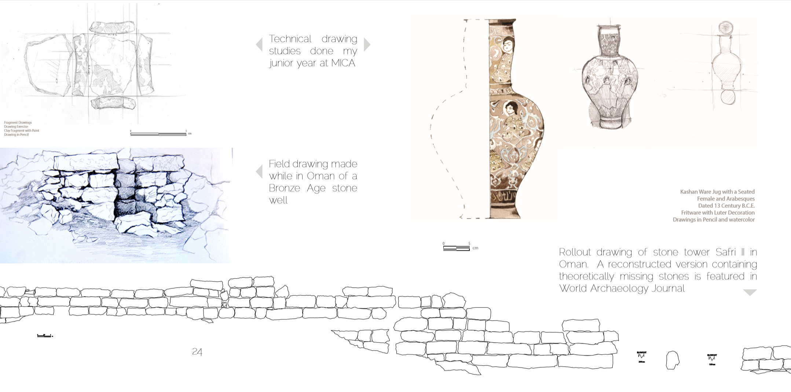
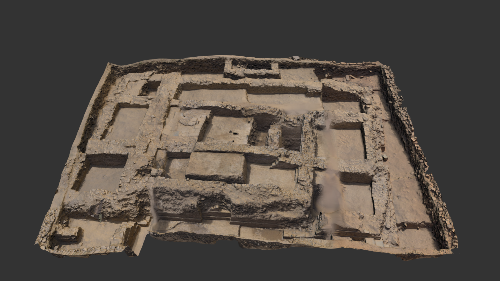

I'm very proud of my long term work with archaeology, starting from a technical drawing class in 2012, and still collaborating with archaeologists today to produce scans, models and drawings to life and share them with the greater archaeology community.
My very first photogrammetry scan which was published in World Archaeology. A bronze age tower in Yanqul, Oman.

This page from my presentation on the class I took before traveling to Oman shows the technical drawings I did before going, as well as onsite. Hidden somewhere at Johns Hopkins is a giant roll of vellum with that stone rollout drawing, it was absolutely massive.

These were not my photos, but I assisted the Johns Hopkins Near Eastern Archaeology Department with assembling two site scans done years apart. Unfortunately there wasn't quite enough overlap between the two digs, so I used GIS waypoints to align the two models and make a complete site layout.